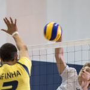

About Me
Saya pemuda berumur 20 tahun asal Gresik yang sedang menjalani
pendidikan di Universitas Muhammadiyah Malang (UMM). Saya merupakan
mahasiswa tahun 2021, mengambil S1 di prodi Informatika. Saya
berharap untuk lulus tepat waktu, kurang lebih di tahun 2025.
Dan menyelesaikan kuliah dengan IPK yang memuaskan
Hobbies
Sepak Bola
Sepak bola, (bahasa Inggris: football atau soccer; bentuk
tidak baku: sepakbola), adalah cabang olahraga yang dimainkan
antara dua tim yang terdiri dari 11 pemain. Permainan ini
menggunakan bola sepak berukuran 68–70 cm (27–28 in) dan
dimainkan di lapangan berbentuk persegi panjang. Tujuan dari
permainan ini adalah untuk mencetak lebih banyak gol daripada
tim lawan dengan menggerakkan bola melewati garis gawang ke
dalam gawang yang dijaga oleh tim lawan.
Basket
Bola basket (bahasa Inggris: basketball) adalah olahraga bola
berkelompok yang terdiri atas dua tim beranggotakan masing-masing
lima orang yang saling bertanding mencetak poin dengan memasukkan
bola ke dalam keranjang lawan.[1] Bola basket dapat di lapangan
terbuka, walaupun pertandingan profesional pada umumnya dilakukan
di ruang tertutup. Lapangan pertandingan yang diperlukan juga
relatif tidak besar, misal dibandingkan dengan sepak bola.
Selain itu, permainan bola basket juga lebih kompetitif karena
tempo permainan cenderung lebih cepat jika dibandingkan dengan
olahraga bola yang lain, seperti voli dan sepak bola.
Bisbol
Bisbol (bahasa Inggris: baseball) adalah olahraga yang dimainkan
dua tim. Olahraga ini mirip dengan permainan bola kasti. Pelempar
(pitcher) dari tim yang melempar berusaha melempar bola yang
disebut bola bisbol, sedangkan pemain (batter) dari tim yang memukul
berusaha memukul bola dengan menggunakan tongkat pemukul (bat).
Tim yang melempar berusaha menangkap bola yang dipukul oleh tim
yang memukul agar tim yang memukul berubah menjadi tim yang melempar.
Tim yang memukul mendapat angka dengan cara berlari berlawanan arah
dengan jarum jam untuk pulang ke home plate setelah menyentuh marka
di permukaan lapangan bisbol yang disebut base. Bisbol juga disebut
sebagai hardball untuk membedakannya dengan sofbol.
Volly

Bola voli (bahasa Inggris: volleyball) adalah permainan olahraga yang
dimainkan oleh dua grup berlawanan. Masing-masing grup memiliki enam
orang pemain. Terdapat pula variasi permainan bola voli pantai yang
masing-masing timnya hanya memiliki dua orang pemain. Olahraga ini
dinaungi FIVB (Fédération Internationale de Volleyball) sebagai
induk organisasi internasional. Sedangkan di Indonesia, olahraga bola
Voli dinaungi oleh PBVSI (Persatuan Bola Voli Seluruh Indonesia).
Contact Me